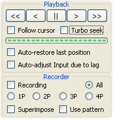
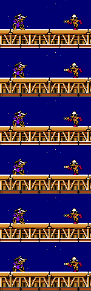

Нелинейный ТАСинг

Это основной метод при работе в Тасэдиторе. Для полного осознания всех его преимуществ вам потребуется несколько дней практики. Особенно долгим может быть переход, если вы уже прочно привязались к традиционному методу и не любите изучать новые технологии.
При работе с этим методом режим Записи должен быть всегда выключен. Галочка "Auto-restore last position" должна быть выключена. Галочки "Turbo seek" и "Follow cursor" по умолчанию отключены и включаются по мере необходимости.
Основное занятие ТАСера:
Так как все создаваемые варианты прохождения участка автоматически сохраняются в Журнале Истории, у ТАСера-новичка может возникнуть соблазн не сохранять варианты в Закладки, а просто один раз дойти до конечного события, а затем экспериментировать с этим Вводом, постепенно улучшая его (а если вместо улучшения получилось ухудшение – сразу же откатывать изменения с помощью Ctrl + Z). Такой способ ТАСинга крайне не рекомендуется, так как он не позволяет вам мыслить далеко за рамками первоначального варианта (из-за подсознательного страха потерять имеющийся лучший вариант, если уйти от него слишком далеко). Даже если в результате последнего изменения Ввода у вас получилось ухудшение прохождения участка, нужно не откатываться к старому варианту, а пытаться разобраться в причинах ухудшения и продолжать осмысленную модификацию, чтобы получить улучшение.
Чтобы не бояться, что предыдущее успешное прохождение участка затеряется в глубинах Журнала Истории, рекомендуется поступать так же, как делают в традиционном методе – отвести специальный слот для лучшего варианта прохождения участка и каждый раз ставить эту Закладку на конец участка, когда результат стал ещё лучше.
Точно так же нужно поступать с перспективными вариантами прохождения участка, которые в чём-то лучше, а в чём-то хуже друг друга. Если вы сохраняете все альтернативные варианты в отдельные Закладки, вы можете со спокойной душой удалять их из мувика или изменять до неузнаваемости – для возврата к ним вам потребуется всего одно нажатие клавиши, а не долгий поиск по Журналу Истории.
В этом методе ТАСинга, в отличие от традиционного, можно не заметить разделение мувика на логические участки, так как не требуется постоянно обозначать начало и конец текущего участка Закладками. Однако рекомендуется всё-таки соблюдать порядок и отмечать хотя бы начало участка Маркером (чтобы ограничить количество факторов оптимальности и не править Ввод на предыдущих участках).
Начало и конец участка обычно ассоциируются не с номером кадра, а с определёнными событиями игры. Но так как на начальное событие редактируемый Ввод участка никак не влияет, то начальный кадр участка не изменяется в процессе оптимизации, и этот кадр можно однозначно зафиксировать Маркером.
Конечное событие участка может наступить в разное время – в зависимости от Ввода на участке. Поэтому, если вы отмечаете конец участка Маркером, необходимо будет перетаскивать этот Маркер выше или ниже, когда из-за изменения Ввода конечное событие изменилось. Если вам лень это делать, можно обойтись установкой Закладки, в которой заодно сохранится полученный вариант прохождения участка. Ну а для самых простых участков можно вообще никак не отмечать конечный кадр, полагаясь на собственную память и на зелёную стрелку Тасэдитора.
С помощью зелёной стрелки Тасэдитор может подсказать, на каком кадре вы остановили просмотр участка в прошлый раз (до того как начали изменять Ввод участка). Обычно это и есть кадр, в котором происходило конечное событие до недавних изменений Ввода. Так что, если после изменения Ввода конечное событие стало детектироваться на 2 кадра выше зелёной стрелки, это означает, что вы обогнали прошлый результат на 2 кадра, значит, новый Ввод лучше старого (если ваш критерий – скорость). Вся эта логическая цепочка пролетает в голове за один миг при взгляде на Piano Roll после просмотра результата Ввода.
Возьмём пример из Super Mario Bros.
Пункт 1. При просмотре готовой части мувика вы остановили Курсор Проигрывателя в момент появления Марио на экране. Решили создать участок от этого места до события, когда координата X будет равна 100. Критерий – чем быстрее, тем лучше. Поставили на начальный кадр Маркер, возможно даже ввели Заметку в духе "start running".
Пункт 2. Сразу понятна первая ошибка во Вводе на участке – нет ни одного нажатия.
Пункты 3 и 4. Одним махом вы рисуете зажатие кнопки R на протяжении пары десятков кадров.
Пункт 5: Отпустили паузу эмуляции (средняя кнопка) и заметили, что Марио пробежал только до X=30, а потом остановился и стоит бесконечно долго. Ставим эмулятор на паузу и возвращаемся к пункту 2.
Пункт 2. Очевидно, ошибка в том, что надо дольше жать R.
Пункты 3 и 4. Дорисовали зажатие кнопки R ещё на сотню кадров, чтобы уж точно хватило.
Пункт 5: Отпустили паузу эмуляции и увидели, как Марио пробежал до X=100 и даже дальше.
Пункты 6, 7 и 8: Поставили эмулятор на паузу и отвели Курсор Проигрывателя немного назад, на кадр с X=100. Это будет конец участка, допустим, это оказался кадр с номером 200.
Пункт 2. Очевидно, надо ещё держать B.
Пункты 3 и 4. Дорисовали зажатие кнопки B параллельно столбику из нажатий R на участке от начального Маркера до конечного. Курсор Проигрывателя во время рисования отпрыгнул в начало участка, а на его месте в конце участка осталась зелёная стрелка.
Пункт 5: Отпустили паузу эмуляции (средняя кнопка) и увидели, как Марио пробежал быстрее, достиг X=100 и бежит дальше. Если вы не нажали на паузу самостоятельно, эмулятор остановится на кадре с зелёной стрелкой.
Пункты 6, 7 и 8: Отвели Курсор Проигрывателя на кадр с X=100, допустим, это кадр с номером 150. Зелёная стрелка напоминает, что в прошлый раз концом участка был кадр 200, значит новый вариант прохождения лучше старого. Можно даже не считать, на сколько кадров было улучшено прохождение, а просто выделить регион кадров от Курсора Проигрывателя до зелёной стрелки и увидеть размер Выделения в панели Splicer.
Пункт 2. Надо бы поэкспериментировать с прыжками и т.д...
Курсор Проигрывателя каждый раз будет автоматически отпрыгивать вверх, а на его месте будет оставаться зелёная стрелка.
Кроме того, вы можете сосредоточиться на первой части участка, мысленно определив подучасток, задачей которого будет наибыстрейшее получение максимума горизонтальной скорости. Для создания такого подучастка нужно перемотать Курсор Проигрывателя на кадр, в котором скорость достигает максимума в текущей стратегии прохождения участка, а затем просто начать редактирование Ввода над этим кадром. При усечении Гринзоны зелёная стрелка перескочит на этот кадр, автоматически обозначив конец подучастка, и вы сможете сравнивать результат новой стратегии с результатом старой.
Процесс создания Ввода в нелинейном методе представляет собой постоянное чередование редактирования и просмотра участка. Анализ ситуации происходит как во время просмотра, так и во время редактирования.
Оптимальное соотношение времени на редактирование и просмотр формируется само по себе в процессе ТАСинга. Более того, это соотношение может меняться в процессе работы над проектом. Чем больше вы ТАСите одну игру, тем лучше вы ощущаете её закономерности. Поэтому ближе к концу своего мувика вы сможете интуитивно предсказывать результаты изменений Ввода ещё во время редактирования, или даже раньше – во время обдумывания их в голове. А просмотр участка будет нужен только для подтверждения догадки.
В некоторых случаях можно судить об оптимальности Ввода по промежуточным результатам, даже не просматривая участок до конца. Например, если персонаж на середине участка спотыкается об уступ и обнуляет скорость, можно сразу догадаться, что к концу участка он дойдёт позже, чем в прошлый раз. Поэтому не всегда хочется просматривать участок полностью, зачастую достаточно просмотреть пару актуальных кадров и продолжить редактирование. Однако такая спешка чревата тем, что вы мимоходом отвергнете решение, которое на первый взгляд кажется неоптимальным, хотя имеет огромный потенциал для успеха. Например, споткнувшись об уступ, Марио может случайно проникнуть внутрь стенки и пройти насквозь быстрее, чем обычно. Поэтому на всякий случай рекомендуется не торопиться, а досматривать участок до конца, когда критерий оптимальности уж наверняка не подведёт.
Способы просмотра результатов Ввода на участке:
Не стоит привязываться к одному из этих способов, лучше чередовать их в зависимости от ситуации. Для тестирования мелких изменений проще использовать колесо мыши или Frame Advance/Rewind. А для просмотра всего участка уже имеет смысл перетащить Курсор Проигрывателя в начало и нажать среднюю кнопку или Pause/Restore Playback.
Важно отметить, что вы можете просматривать и редактировать Ввод одновременно. Когда галочка "Follow cursor" снята, Piano Roll во время проигрывания мувика остаётся на месте редактирования, и вы можете дорисовывать нажатия кнопок прямо в момент их выполнения. Например, попробуйте во время исполнения прыжка Марио начать изменять высоту этого прыжка, дорисовывая или стирая лишние нажатия A на текущем участке. Останавливать эмуляцию при этом не требуется.
При необходимости можно замедлить эмуляцию хоткеями - и =, чтобы во время просмотра было достаточно времени для неспешных щелчков мышью. Однако, когда требуется не только пощёлкать, но ещё и подумать, следует вернуть эмулятор на паузу.
Процесс эмуляции можно не только замедлять, но и ускорять. Раньше ускорение эмуляции использовалось только для быстрой навигации Курсором Проигрывателя к нужному уровню в игре. В Тасэдиторе турбо-эмуляция ещё используется в качестве оригинального способа ТАСинга.
С помощью ускоренной эмуляции можно наглядно ощутить взаимосвязь не только между нажатием и следующим кадром, но также между нажатием и отдалённым событием.

Возьмём в качестве примера манипуляцию удачей.
Без турбо-добегания вы можете увидеть взаимосвязь между нажатием кнопки B и появлением пули в следующем кадре. Соответственно, в голове появляется ассоциация "B = выстрел", и мысли идут в направлении "чем позже поставлю нажатие B, тем позже вылетит пуля".
А с турбо вы можете сразу после установки B увидеть выпавший из убитого врага приз, пропустив неважные промежуточные шаги (выстрел, полёт пули, столкновение, смерть врага и т.д.). В голове появляется ассоциация "B = вероятность приза", и мысли идут в направлении "от времени нажатия B зависит тип приза".
Таким образом турбо позволяет автоматически отфильтровать ненужную информацию, идущую посреди участка, и сразу получить только нужную, появляющуюся в конце участка.
Делается это так:
Если у вас очень медленный компьютер, ассоциирование выстрела с выпавшим призом может не сработать, так как турбо-перемотка будет работать медленно, и вам придётся ждать результат, теряя концентрацию внимания. К счастью, FCEUX – очень быстрый эмулятор (при использовании Old PPU).
Итак, второй метод ТАСинга можно разделить на три подвида:
Выбор конкретного метода зависит от текущей задачи ТАСера. Начинать обучение следует с редактирования во время паузы эмулятора. Можно осуществлять полный или частичный просмотр после каждого мелкого изменения, а можно перерисовать весь участок и только потом просмотреть получившийся результат.
Плюсы нелинейного ТАСинга:
+ Мгновенная навигация к месту редактирования.
+ Возможность пропускать ненужные сцены и ассоциировать действие с итогом.
+ Отстранённость ТАСера от игрового потока позволяет изучать поведение игры более объективно.
Минусы метода:
– Отсутствие геймерской "отдачи" при редактировании на паузе. Для объективности это полезно, но нередко требуется слиться с игрой более плотно.
– Упор на мышиное управление. Клавиатура/джойстик в этом методе могут помочь быстро генерировать Ввод, но их возможности для навигации очень ограничены. А во время шлифовки навигация требуется очень часто.
Когда использовать: в большинстве случаев оптимизации участков. Полезно также комбинировать этот метод со следующим методом, переключаясь между ними для формирования в голове наиболее объективной картины игровых возможностей.
Следующий метод исправляет главный минус этого метода и в ряде случаев полностью заменяет его.
Created with the Personal Edition of HelpNDoc: Easily create EBooks